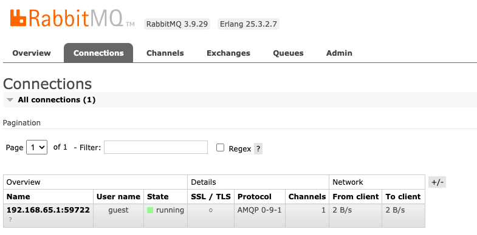

To really appreciate the simplicity that dapr provides, let's build two applications that use common components that you'd expect from any mildly complex distributed solution.
You may write along if you wish, but I've designed this section to be more of an inspiration to how you can enable certain building blocks and the lessons I've learnt doing so.
The exercise is designed to first write the application code, which allows you to think "how would I normally enable these functionalities?", and then I'll create a component configuration that goes along with the feature.
Key terminology
As with anything new, grasping key terminologies often makes the learning curve smoother and enhances understanding. At this point, you're likely familiar with most of the dapr terms, however, take a minute to review the terms below and their meaning.
dot dapr (.dapr) folder: a folder which holds dapr specific configurations, and is conventionally also named .dapr. Individual developers may change its physical name, but should still be referred to as the "dot dapr folder."
Component: a building block implementation, such as the "secrets manager component."
Project component: a component that is specifically only used in a single application.
Resource: a broad catagorization of dapr constructs, such as "multi app run file," "component," and "dapr API."
Shared resource: typically refers to a shared dapr component.
Sidecar: short for an application-specific "dapr sidecar."
The applications
We'll create two simple, arbitrary applications that communicate with each other through HTTP, gRPC, and event messages.
The applications are not meant to model any domain, or, really make any sense. They're made purely to demonstrate dapr capabilities that are prevalent in many distributed architectures and solution designs:
Service-to-service invocation (HTTP and gRPC): how
Secrets management: dealing with securely store and retrieve secret values.
Pub/sub
Configuration management
The applications are containerized ASP.NET Core apps built using .NET8 preview with. One is a regular "Empty" ASP.NET Core app, and the other is initialized with the gRPC template.
Each following section demonstrates a certain building block.
Solution structure
We have a single .NET solution with two projects (applications):
Users: a web api that exposes a simple HTTP API.
Accounts: a gRPC service exposing its method using a proto description file.
Notice there's a dot dapr (.dapr) folder in both the solution root and each project.
The solution dot dapr is intended for gathering shared resources and solution wide files, such as the multi app run file dapr.yml.
Docker containers
We need to have a few docker containers running locally to simulate actual external services that our applications can interact with through their sidecars.
All we need is a postgres server and rabbitmq message broker running.
You might have noticed the docker-compose.yml in the solution structure. I've added the following services to the docker compose file:
version: "3.9"
# Notice I've changed the default host ports
# to avoid port collisions with other running
# containers on the machine.
services:
demo-postgressql:
image: postgres:latest
ports:
- "5410:5432"
environment:
- "POSTGRES_USER=postgres"
- "POSTGRES_PASSWORD=postgres"
demo-rabbitmq:
image: rabbitmq:3.9.29-management
ports:
- "15699:15672" # UI
environment:
# Showing the default username/password for
# those who are not used to rabbitmq
- "RABBITMQ_DEFAULT_USER=guest"
- "RABBITMQ_DEFAULT_PASS=guest"
You can then start the docker containers by running docker-compose up from the solution root.
Daprize the applications
Let's first daprize the applications. By the way, the "daprize" process is the same for brown-field applications.
The first step is to create a "multi app run file" resource located in solution/.dapr/dapr.yml. It's an appropriate first step as the file won't change much after its initial creation.
The file primarily only changes if you need to more daprized applications.
# Multi-App template file
# Use this file to run multiple applications at once.
# Run `dapr run --run-file dapr.yml`
version: 1
common:
# Shared 'resourcesPath' doesn't work for apps that have its own 'resourcesPaths' defined.
resourcesPath: components # path relative to the location of this file (dapr.yml)
apps:
- appID: accounts-app
appDirPath: ../src/Accounts
appPort: 5118
daprHTTPPort: 3500
daprGRPCPort: 60000
appProtocol: grpc
daprdLogDestination: console
appLogDestination: console
logLevel: info
# command: ["dotnet", "watch", "--non-interactive"]
- appID: users-app
appDirPath: ../src/Users
resourcesPaths:
- .dapr/components
- ../../.dapr/components
appPort: 5214
daprHTTPPort: 3501
daprGRPCPort: 60001
appProtocol: http
enableApiLogging: true
daprdLogDestination: console
appLogDestination: console
logLevel: debug
# command: ["dotnet", "watch", "--non-interactive"]
Installing package dependencies
Since dapr is mostly doing all the work in the sidecar, "daprizing" applications is as simple as adding a few dependencies, and very little additional code.
To take full advantage of the dapr building blocks, we'll need to install a few dependencies:
Then add dapr client to the dependency injection container.
builder.Services.AddDaprClient();
This is all the setup we need for now. We'll add additional setup as we onboard new components.
Run the sidecars
As you develop your application, you can have the dapr sidecars running. The only time you need to restart the sidecars is when you're making dapr-specific changes such as component updates.
Run dapr run -f .dapr/dapr.yml
Service-to-service building block
Let's understand how the service-to-service invocation building block works, and see if it differs from regular web api interactions.
I've created the following controller and action in the users ASP.NET Core app. Note that the app runs on port 5214 and its sidecar on port 3501.
[ApiController]
[Route("[controller]")]
public class UsersController(ILogger<UsersController> logger) : ControllerBase
{
[HttpGet("Me")]
public IActionResult GetMe()
{
return Ok(new MeResponse(Guid.NewGuid(), "demo-user"));
}
}
public record MeResponse(Guid Id, string Username);
HTTP call
You can start the application locally as you'd always do, and hit this endpoint with:
an http request
using dapr resources such as the dapr cli
and requests directly to the sidecar.
curl http://localhost:5214/users/me
A simple curl request works as expected. Nothing has changed, even though we're also using dapr.
dapr invoke --app-id users-app -m /users/me -v GET --log-as-json
You can use the dapr cli when testing locally. Using --log-as-json is great for debugging potential dapr configuration errors.
Also, dapr defaults to POST requests. You have to explicitly tell the cli to use GET.
The more interesting bit is how the sidecar works, since this is how your applications are going to interact with each other. This can be done in two ways:
Notice we're making a regular HTTP request, but this time directed at the user application's sidecar, running on port 3501.
Using the http header dapr-app-id may produce a nice-looking url, but this approach also requires you to add dapr specific headers in your code.
HTTP code implementation
With this new knowledge, let's see how the accounts app can call our users app.
It's important to note that the accounts app's sidecar runs on port 3500.
Just like before, we have several ways of achieving the same, when calling another service:
Use DaprClient's InvokeMethodAsync method. This is very restrictive, and I think this should generally be avoided.
Create an Invoke method request using the same DaprClient. This is preferred over using InvokeMethodAsync because we have more flexibility, and it allows us to add additional headers.
The "dapr native" way by creating an "Invoker http client" which dapr configures for us. This approach allows nice-looking URLs and provides us with flexibility because we're essentially dealing with an almost regular HttpClient.
Use a language native HttpClient. This is my preferred option since we've no reliance on external code. We simply make a regular HTTP call to the sidecar.
Take a second to review the code below which exemplifies the four approaches.
public class GreeterService(DaprClient client) : Greeter.GreeterBase
{
/// <summary>
/// Demonstrating four different ways to invoke an other service with the dapr sidecar.
/// </summary>
public override async Task<HelloReply> SayHello(HelloRequest request, ServerCallContext context)
{
// 1. The simplest is to use the DaprClient's InvokeMethodAsync method.
// This is provides very limited functionality and should be avoided.
MeResponse? simpleInvoke = await client.InvokeMethodAsync<MeResponse>(
HttpMethod.Get,
"users-app",
"users/me"
);
// 2. Create an Invoke request that
// This allows us more control over the request itself.
// Useful when you want to include additional headers.
HttpRequestMessage invokeRequest = client.CreateInvokeMethodRequest(
HttpMethod.Get,
"users-app",
"users/me"
);
invokeRequest.Headers.Authorization = new AuthenticationHeaderValue("Bearer", "some jwt");
MeResponse? response = await client.InvokeMethodAsync<MeResponse>(invokeRequest);
// 3. Use the "Dapr native" HttpClient
// Since the method 'CreateInvokeHttpClient' returns a regular
// HttpClient, you have almost full control.
HttpClient? invoker = DaprClient.CreateInvokeHttpClient();
var invokerResponse = await invoker.GetFromJsonAsync<MeResponse>(
"http://users-app/users/me"
);
// 4. Use the language native way.
// Full flexibility and no use of dapr-specific methods.
var httpClient = new HttpClient
{
BaseAddress = new Uri("http://localhost:3500"),
DefaultRequestHeaders = { { "User-Agent", typeof(GreeterService).Assembly.GetName().Name } },
};
HttpResponseMessage result = await httpClient.GetAsync(
"v1.0/invoke/users-app/method/Users/Me"
);
string body = await result.Content.ReadAsStringAsync();
return new HelloReply
{
Message = $"WebAPI: Hello {request.Name}"
};
}
public override Task<GoodbyeReply> SayGoodbye(GoodbyeRequest request, ServerCallContext context)
{
// Keep empty for now
return base.SayGoodbye(request, context);
}
}
public record MeResponse(Guid Id, string Username);
That's generally how you'd do service-to-service calls over HTTP. The dapr sidecar provides a huge benefit in distributed systems, because services no longer need to know the address over other services. The sidecar will make things happen for you.
gRPC call
gRPC services are defined using proto descriptions. Here's the accounts app's proto file:
This allows us to invoke the services SayHello and SayGoodbye with the sidecar. However, the dapr cli doesn't seem to support gRPC invocation at this point.
gRPC code implementation
Let's see how the users app can make gRPC calls to the accounts app.
This proto description file needs to be present in the users app. I've created the file in ./src/users/Protos/greet.proto. Then, I've also configured the users app to act as a gRPC client, but adding the following to the Users.csproj:
Alright, with all the configuration out of the way, we can finally get to call the gRPC service. You'll see that calling a gRPC service through the sidecar doesn't provide as many options as with HTTP.
All you do is make a regular gRPC call with an added dapr-app-id header to the users app sidecar running on port 60001.
// Added enpoint in
[HttpGet("Remote")]
public async Task<IActionResult> CallRemote()
{
GrpcChannel channel = GrpcChannel.ForAddress("http://localhost:60001");
var c = new Greeter.GreeterClient(channel);
var meta = new Metadata
{
{ "dapr-app-id", "accounts-app" }
};
GoodbyeReply? response = await c.SayGoodbyeAsync(new GoodbyeRequest(),meta);
return Ok();
}
Alright, now you've seen how the service-to-service building block works.
Configuration management building block
Applications often need flexible configurations that can change without having to modify code, restart, or redeploy. That's where the dapr configuration component comes in handy.
Preparing the app for configurations
Say we want to let the users app dynamically change the username output from the /users/me endpoint. We'll first make a few changes to the users app. Notice that none of these changes are dapr specific yet.
Add the new configurations to the appsettings.json.
public class UserConfiguration
{
public string Username { get; set; }
}
Wire up the UserConfiguration class wit hthe dependency injection container.
// In Program.cs
builder.Services.Configure<UserConfiguration>(config.GetSection("UserConfigurations"));
Add the configuration class as a monitored option to the controller.
public class UsersController(
IOptionsMonitor<UserConfiguration> config,
ILogger<UsersController> logger) : ControllerBase
{
[HttpGet("Me")]
public IActionResult GetMe()
{
return Ok(new MeResponse(
Guid.NewGuid(),
config.CurrentValue.Username)
);
}
}
The none-dapr specifics are now done. Let's shift our focus on creating a component configuration and setting things up to work with the Configurations building block.
Setting up the configuration component
Enabling the configuration component is somewhat involved since it requires us to define a component configuration, configure the application, and create a database table and trigger.
Add a file in the solution's .dapr folder: ./.dapr/components/configurationstore.yml.
Now configure the component like so:
apiVersion: dapr.io/v1alpha1
kind: Component
metadata:
name: configurationstore
spec:
type: configuration.postgresql
version: v1
metadata:
- name: connectionString
# Port 5499 from mapped port in docker-compose
value: "host=localhost user=postgres password=postgres port=5499 connect_timeout=10 database=postgres"
- name: table
value: "configurations"
- name: subscribePollInterval
value: 60000000000 # = 1 second
This tells dapr that it can find configurations using a postgres database, with the specified connectionstring and pulling configurations from the table called configurations. Be aware that dapr only supports all-lowercase configuration table names.
Then we need to set up the database to contain our "configurations" table and trigger to notify when changes occur. You'd want to keep this script in source control and apply as part of a migration.
CREATE TABLE IF NOT EXISTS "configurations"
(
KEY VARCHAR NOT NULL,
VALUE VARCHAR NOT NULL,
VERSION VARCHAR NOT NULL,
METADATA JSON
);
CREATE OR REPLACE FUNCTION notify_event() RETURNS TRIGGER AS $$
DECLARE
data json;
notification json;
BEGIN
IF (TG_OP = 'DELETE') THEN
data = row_to_json(OLD);
ELSE
data = row_to_json(NEW);
END IF;
notification = json_build_object(
'table',TG_TABLE_NAME,
'action', TG_OP,
'data', data);
PERFORM pg_notify('config',notification::text);
RETURN NULL;
END;
$$ LANGUAGE plpgsql
CREATE TRIGGER config
AFTER INSERT OR UPDATE OR DELETE ON "configurations"
FOR EACH ROW EXECUTE PROCEDURE notify_event();
You might want to run the dapr run file to check if your sidecars are configured correctly, and loads the new "Configuration" component. The sidecar shows an error in case of malconfigurations.
Switching back to our application, you'll need to tell it how to fetch configuration values from dapr. At the moment, there seems to be a few development issues that require us to both use the AddDaprConfigurationStore()andAddStreamingDaprConfigurationStore(). I've explained why in the code.
const string configurationStore = "configurationstore";
// Allows us to pull configuration values immediately.
builder.Configuration.AddDaprConfigurationStore(configurationStore,
new List<string>(), // Empty means all keys
daprClient,
TimeSpan.FromSeconds(10)
);
// Allows us to listen for new and updated values in the database table.
// Adding this alone will not load the initial values.
builder.Configuration.AddStreamingDaprConfigurationStore(configurationStore,
new List<string>(), // Empty means all keys
daprClient,
TimeSpan.FromSeconds(10),
// pgNotifyChannel is set to the value from our
// previous SQL script 'PERFORM pg_notify('config',notification::text);'.
metadata: new Dictionary<string, string> { { "pgNotifyChannel", "config" } }
);
builder.Services.Configure<UserConfiguration>(config.GetSection("UserConfigurations"));
Change value
At this point, we'll need to rerun dapr to load the new component.
After that, try call dapr invoke --app-id users-app -m /users/me -v GET
The keen reader has likely noticed that I've placed a secret value in our configurationstore.yml file. Since this file is supposed to be git-committed, we'll need to strip it from secrets. Even if those secrets are just used for development.
Managing secrets is challenging. How you manage secrets locally, in test environment, and when deployed to production also varies greatly, making things even more difficult.
For this, you can use the Secrets Management building block for both:
Reading secrets into other dapr components,
and loading secret values into your application.
Local secrets file
Storing secrets in files locally is generally fine for development purposes, but never check secrets into source control.
Preparing the component
Create a project secrets component configuration in the users.dapr/components folder.
apiVersion: dapr.io/v1alpha1
kind: Component
metadata:
name: secretstore
namespace: default
spec:
type: secretstores.local.file
version: v1
metadata:
- name: secretsFile
# Relative to the project, and not solution root
value: .dapr/secrets/appsettings.Secrets.json
# Allows nested json
- name: nestedSeparator
value: ":"
# 'multiValued=false' allows us to access json
# values like ConnectionStrings:Postgresql
# which would otherwise just become "Postgresql"
- name: multiValued
value: "false"
Since secrets are typically application-specific, you'd want to place this file within the project that needs the secrets, as opposed to having this component as a shared resource between all daprized applications.
In the project itself, create a file that holds secret values here .dapr/secrets/appsettings.Secrets.json, containing whatever values your application might need, such as a connection string or private key.
// appsettings.Secrets.json
// placed in the project .dapr/secrets folder
{
"ConnectionStrings": {
"Postgresql": "My secret connectionstring to postgresql"
}
}
git-ignore the appsettings.Secrets.json making sure it doesn't make its way into the git repository.
It's a good practice to quickly see if dapr picks up your new components. Running the dapr run file gives us this:
If you get any errors, it's worth paying close attention to paths, folders, and their relative position.
Let's get rid of the connection string in the "Configuration" component file. Update the component to reference the ConnectionStrings:Postgresql secret value.
There are two important changes here, compared to the original yaml: observe the connectionstring now references a secret with secretKeyRef having both name and key set with identical values. Secondly, I've added an auth element which is set to the exact same name as our secrets component's name.
Preparing the application
First off, to be a good citizen, let's tell our colleagues that they now need to use .dapr secrets by making it explicit within the appsettings.json.
// appsettings.json in the Users application.
{
// other settings
"ConnectionStrings": {
"Postgresql": "use .dapr/secrets/appsettings.Secrets.json"
}
}
There's almost nothing more annoying than chasing down settings loaded from various sources. Establishing clear and direct configurations promotes scalability and enhances collaborative efforts.
Configure the application to have secrets loaded in at start-up.
The daprClient is the same we instantiated during the "Configuration building block" steps. Also, take note of the secretstore name, passed as first parameter. This name must match the metadata.name from the secrets component.
The TimeSpan.FromSeconds(10) means we're willing to wait 10 seconds for the sidecar to respond with the values.
We've now demonstrated how to implement and use the "Secrets management" dapr building block and component, both in terms of accessing secret values within the application at runtime, and as Reference secrets in other dapr components.
Pub-Sub building block
The Publish-Subscriber pattern is prevalent in many distributed architectures and solution designs, and dapr makes it easier than ever to implement message-based communication.
Preparing the pub-sub component
To start off with, we need to prepare the pub-sub component. We've already set ourselves up RabbitMQ earlier, in the docker-compose file. Now it's just a matter of defining our component configurations.
Create a pub-sub component in the solution .dapr/components folder called pubsub.yml.
Try to rerun your dapr run file. You should see the sidecar picks up the new component. Then go to the rabbitmq management interface, and verify that the sidecar has an active connection. 
The pub-sub component is quite simple to integrate with and doesn't require much else.
Preparing the app for pub/sub
How you deal with events at the application level is somewhat different than what I've usually been used to.
The usual experience goes something like this: create a connection, then grab a channel, declare an exchange and a queue and bind those two. After that, you need to create a consumer that listens to events that are routed to the queue.
All this is gone. With dapr, events are routed to a regular web API endpoint.
Our next step is to prepare the Users app, enabling the sidecar to send events to the app.
Add a few configuration lines to the Program.cs file.
// After app.MapControllers();
app.UseCloudEvents();
app.MapSubscribeHandler();
The method argument CloudEvent. Dapr allows us to use the [CNCF event description](https://cloudevents. io/) out-of-the-box.
The topic's first argument is the pubsub.yml metadata.name and the second is an arbitrary name of the message broker exchange that you want to pick up messages from.
The [HttpPost("newevent")] attribute, where newevent becomes the name of the rabbitmq exchange. There's also a rabbitmq queue created named users-app-newevent.
Run the Users app while the sidecar is running and go to the rabbitmq management interface.
As you can see, listening for events with dapr suddenly becomes trival, and there's no need for a lot of ceremony and boilerplate code.
Since we're expected cloud-event messages, the messages need to conform to a specific format:
// Example message you can post on the queue
{
"specversion" : "1.0",
"type" : "my-event-type",
"source" : "/mycontext",
"id" : "B234-1234-1234",
"time" : "2018-04-05T17:31:00Z",
"datacontenttype" : "application/json",
"data" : {
"exampleKey" : "exampleValue"
}
}